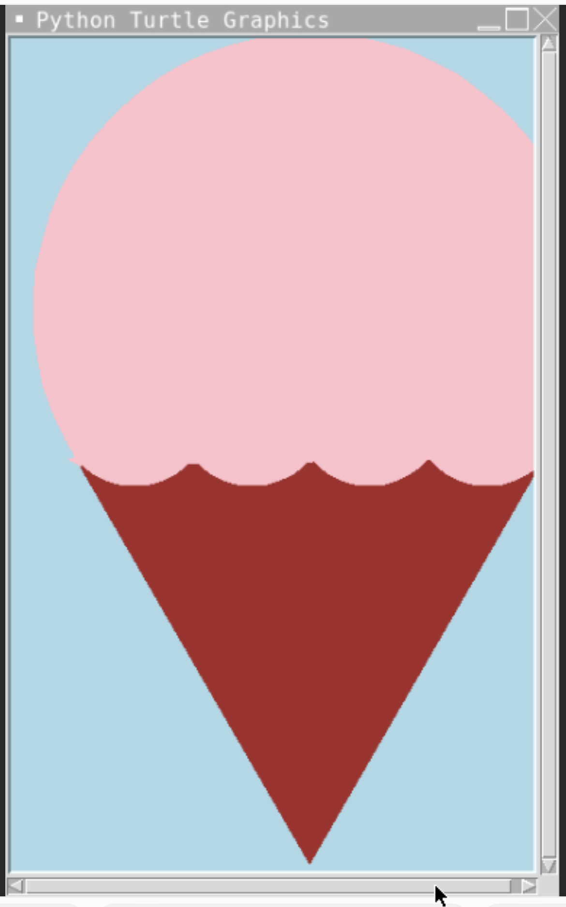
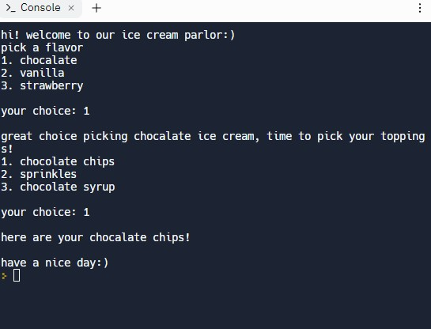
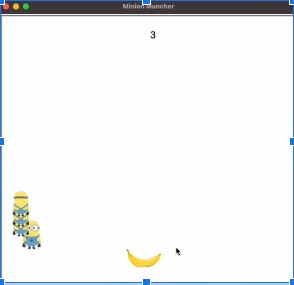
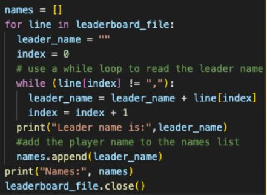

Home
Portfolio
About Me
This is my Portfolio Page!
1.1.9 project-Ice Cream game


This is our Ice cream game. It asks what flavor you want and what toppings you would like. We used Replit to code it and had fun creating it.
1.2.5 project-Minion Muncher


This is our minion muncher game. Basically its like the snake game but instead with a minion chasing a banana. Each time the banana finds a different location. Overall a very fun project.
Scratch project.
This is the scratch project Jada and I created. How it works is there is a diver that you have to move accross the screen with your mouse to save the fish from getting devoured. After 20 seconds it turns into a space themed background with rockets.
3.2.4 project

Here is the one of the graphs of the honey data in each U.S. State. Overall interesting project.
4.1.4 Project

This is our sheep wolf Netlogo project. It shows the corrrelation between the population of both species and how one affects the other.